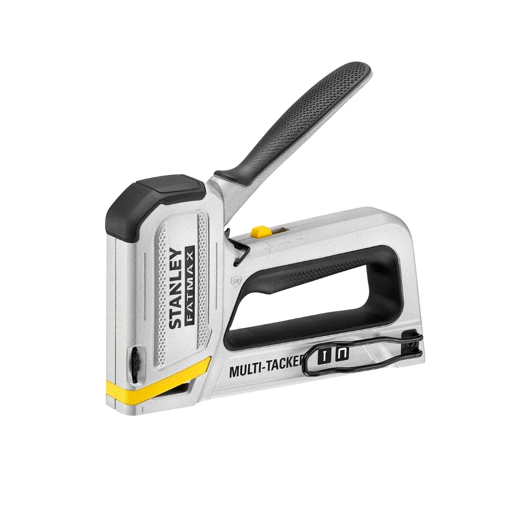
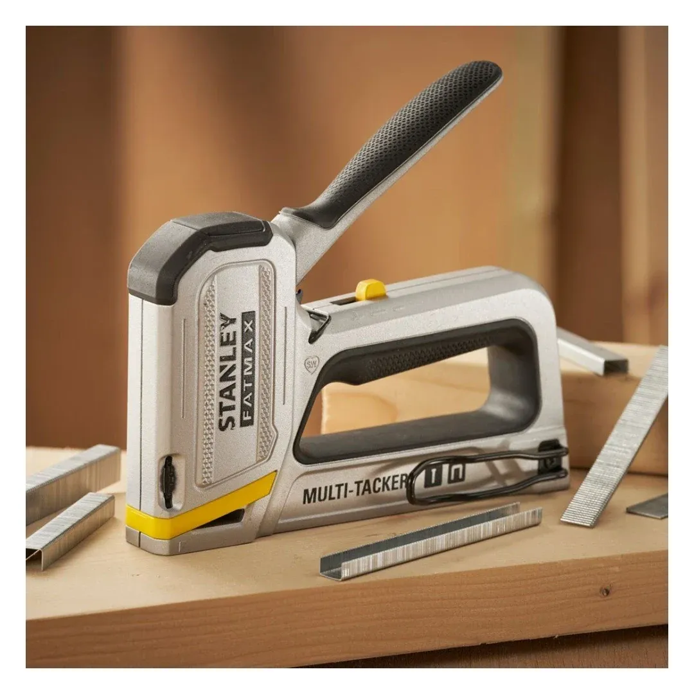
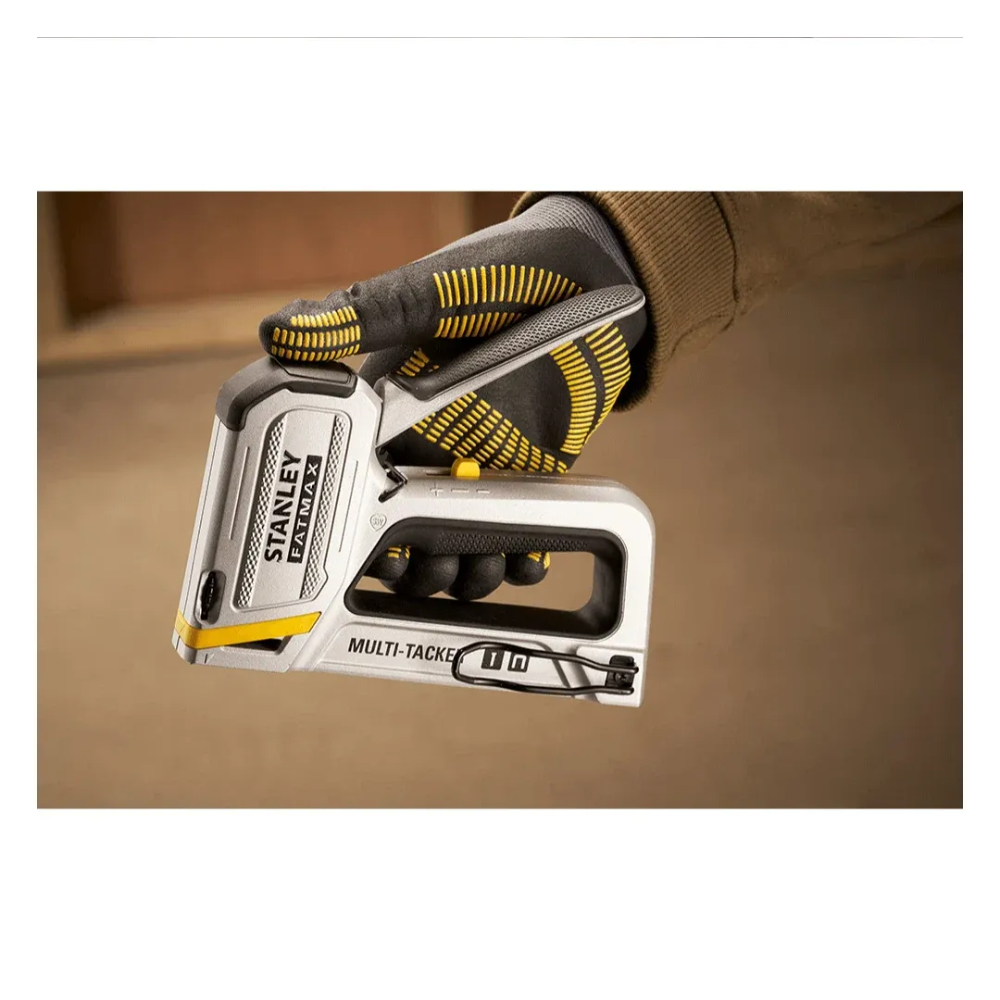
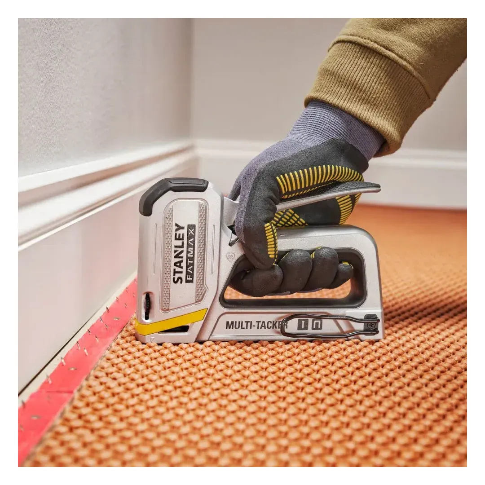
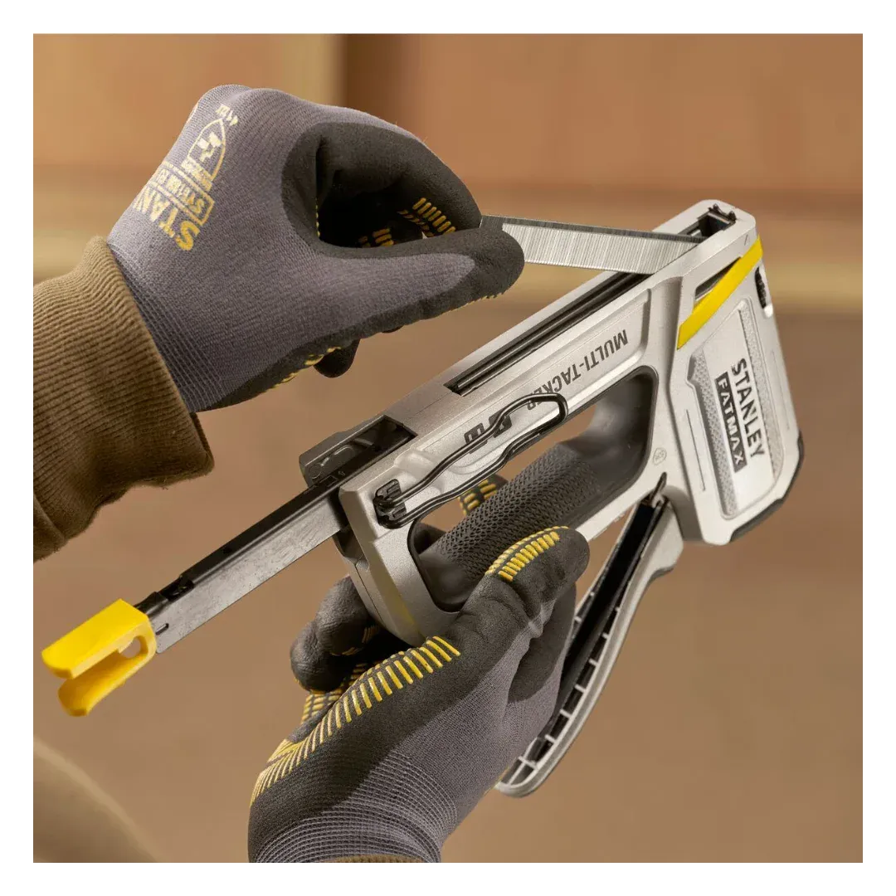
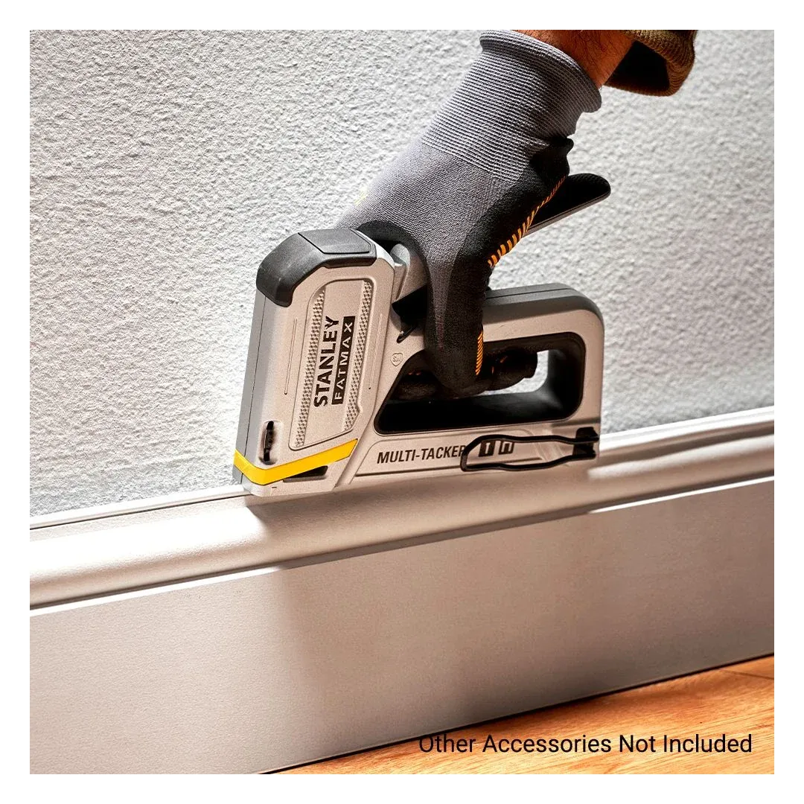
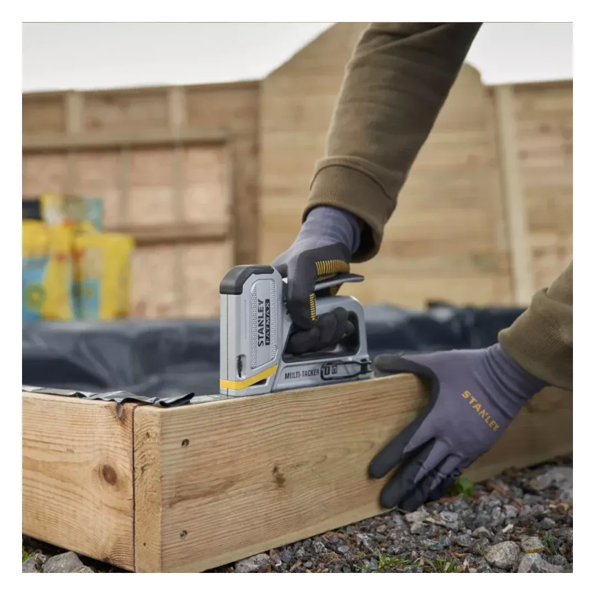

Stanley | Fatmax StaplerNailer / Heavy Duty New
FMHT70250-0







The STANLEY® FATMAX 2-in-1 Multi Tacker is perfect for multiple professional applications including fixing drywall beads and scrim to plasterboard, securing carpets, fencing and roof sheeting. It features an anti-jam mechanism for continuous use and reliable operation, as well as a high and low power setting to control the intensity of the staple application. Takes Type-G Staples and Type-J Brad Pins.
Features
- Easy Squeeze Technology: For reduced fatigue and added driving power into materials.
- Anti-Jam Mechanism: Prevents fasteners jamming, for continuous use and reliable operation.
- High-Low Power Setting: Controls intensity of staple application when working on a variety of hard and soft materials.
- Staple Reload: Easy to reload staple gun.
- Staple Window: Provides clear visibility to determine when staple reload is required.
- Integrated Handle Lock: For safe storage and transportation.
- Belt Clip: For convenient storage whilst working and easy transportation.
- Soft Grip Handle: For added comfort.
- Aluminum Construction: For long-lasting durability.
- Compatible Fastenings: Fires STANLEY Type-G staples in 6mm - 14mm and STANLEY Type-J Headed Brad Pins in 12mm - 15mm
- Staples Not Included.
The STANLEY FATMAX 2-in-1 Multi Tacker (FMHT70250-0) is the updated replacement for the Stanley TR250 Heavy Duty Staple & Brad Gun (0-TR250 / 6-TR250)
Specifications
| Rating | Industrial |
| Consumable Type | Staples and Brad Nails |
| Staples Size [Metric] | 6, 8, 10, 12, 14 mm |
| Body Material | Aluminium |
Includes